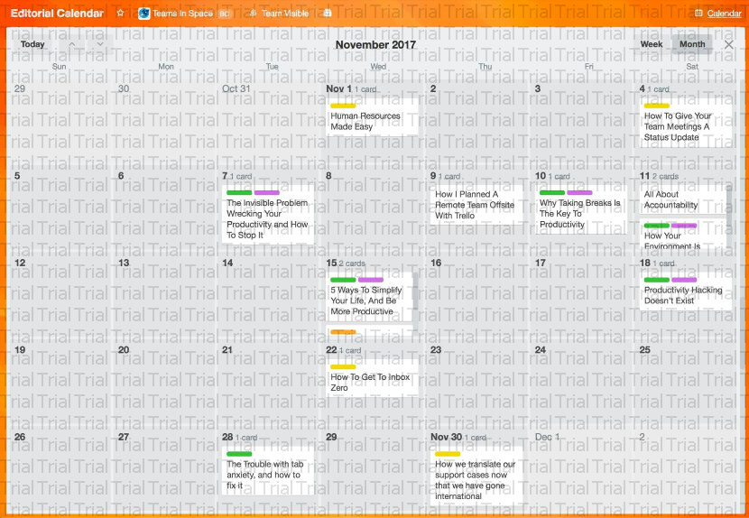
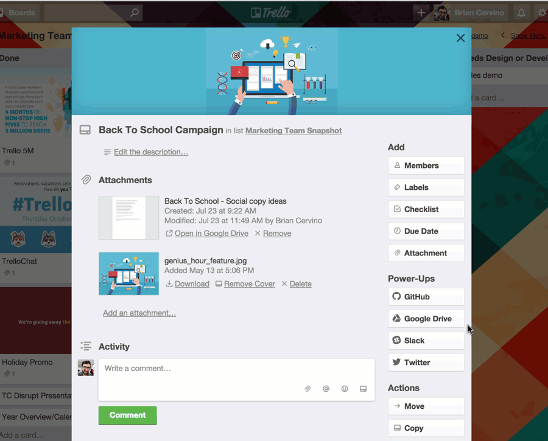
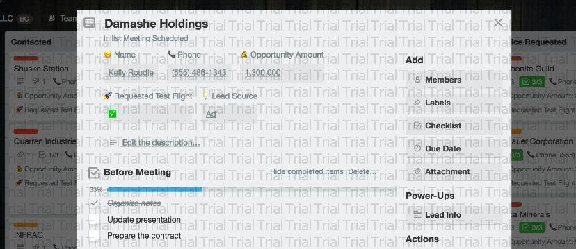
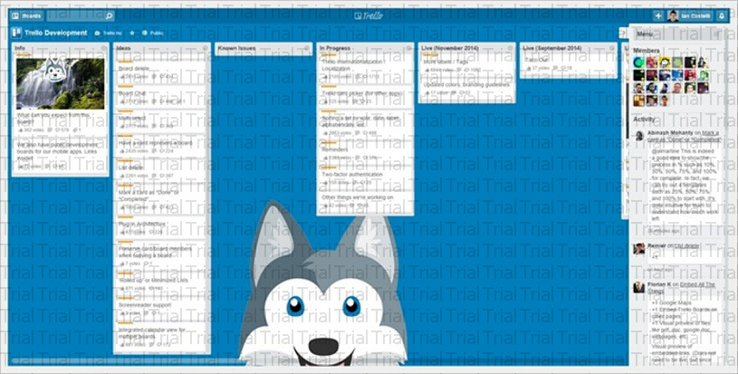

Calendario
vea sus fechas de vencimiento en la vista de calendario y cambie la perspectiva de un tablero con el Power-Up Calendario.

Google Drive: acceda rápidamente a los archivos desde la parte posterior de una tarjeta y tenga siempre la información más importante sin necesidad de abandonar Trello. (También funciona con Box y Dropbox)

Campos personalizados: Añada información más estructurada como costes, estimaciones de tiempo, números de teléfono y demás información a las tarjetas. Estos elementos pueden verse en la parte delantera y trasera de la tarjeta.

ATAJOS

Trello está cargada de atajos del teclado. Estos te permiten hacer cualquier cosa en una tarjeta, desde archivarla y moverla hasta añadir y quitar miembros y etiquetas, con un clic en una tecla. Puedes pulsar “?” en cualquier momento para mostrar la página de los atajos (¿un atajo para los atajos? Alucinante). Sin embargo, quiero destacar algunos de mis favoritos.
Mi favorito personal es el atajo “b”, que abre el menú de tableros y te permite buscar tableros instantáneamente. Pulsa “b”, escribe las primeras letras del tablero que estás buscando, pulsa “Intro” y estás ahí. Es la forma más rápida de cambiar tableros.
Otro favorito es “f”, que abre el filtro de tarjetas mientras estás en un tablero. Puedes empezar a buscar al instante tarjetas por el título. El filtro también te puede sugerir miembros y etiquetas, así que puedes empezar a escribir “da” y te mostrará como sugerencia “Daniel”. Pulsa “Intro” para ver las tarjetas asignadas a él. Pulsa “x” para limpiar un filtro.